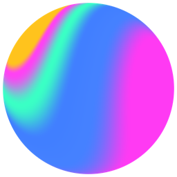

01 / Give it a voiceIt starts
It starts
with identity.
A brand has to feel like itself wherever it appears. For El Paraíso, that meant taking an identity from the logo to packaging and retail interiors.
I build brands that feel like themselves.
On the shelf, on screen, and in the inbox.
A few projects to start.
There’s more to the story below.
A quick look / All disciplines
A glance at every project. Select an image to open the complete work.
The point of view
Branding is the throughline in everything I make — a logo, a website, a social campaign, an email flow, it all has to sound like the same brand said it. 13 years in design, 7 of them architecting e-commerce UX on Adobe Commerce, Shopify, BigCommerce, and Shopware. Currently at Crimson Agility, remote from Medellín, Colombia — EST/CST-aligned, no visa or sponsorship required.
A brand has to feel like itself wherever it appears. For El Paraíso, that meant taking an identity from the logo to packaging and retail interiors.
Identity becomes an experience. For TK Elevator, I designed a two-click part-lookup flow for maintenance technicians, across category navigation and product detail pages.
A brand’s voice carries into the inbox, too. For Feat Clothing, I built a modular email system to support weekly drops without wearing down the brand’s aesthetic.
How I can help
From finding the direction to refining what ships. Here’s how my work connects across a brand, a product, and the people building it.

Before the visual work, I help turn business goals and audience needs into a clear design direction. We look at what exists, where people get stuck, and what the experience needs to communicate.
Translate that direction into an identity that holds together across a logo, a package, a storefront, and a campaign. The goal is a system your team can keep using as the brand grows.

Connect the brand’s character with the way people browse, compare, and buy. I design the paths and the details together, from navigation and product discovery to responsive pages and checkout.
Bring a new feature or a better way of doing something into focus. Flows, wireframes, and clickable prototypes help a team compare directions and resolve questions before development begins.

Carry the same visual language into the moments that bring people back. Modular email and campaign assets give new launches and ongoing communications a consistent starting point.
Work alongside developers to translate the intended experience into something consistent. Clear components, states, responsive rules, and design reviews make it easier to resolve the small decisions that shape the finished product.
That’s the throughline.
Work
Three lenses on 13 years of design work — each one scoped, owned, and shipped end to end.
Smaller-scope identity systems — logo, packaging, and retail branding, each taken 0→1.
Across the portfolio
Agency collaborations and independent projects. Explore the work behind each mark.

I started as a graphic designer in Maracaibo in 2014 — branding, packaging, retail spaces — then moved into email design, and eventually into full UI/UX ownership for e-commerce. Today I design storefronts and design systems for US-based brands on Adobe Commerce, Shopify, BigCommerce, and Shopware at Crimson Agility, while running Alinea, my own branding & web studio, on the side.
I take on the projects where the interface has to carry a brand's voice, not just its function — a checkout that still feels like the brand, a spec-heavy B2B catalog a technician can actually navigate. Based in Medellín, Colombia, working EST/CST hours, no visa or sponsorship required for US-based teams.
A brand’s voice belongs in the details. Even the checkout.
On my desk
The tools I use to explore, make, and collaborate.

Spline
Mid to senior level — UI/UX, Branding & Growth Marketing.
Medellín, Colombia. EST/CST-aligned. No visa or sponsorship required.